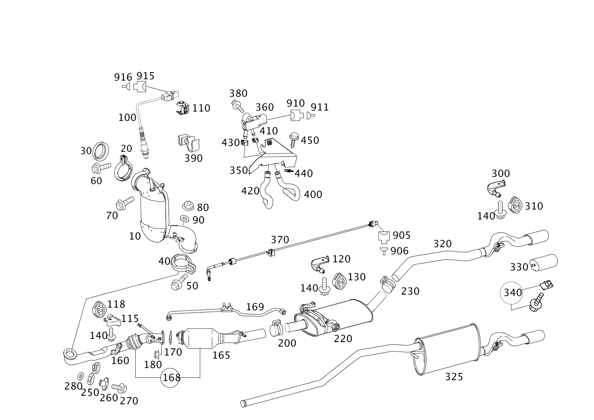

| № | Артикул | Название | Кол. | Примечание |
|---|---|---|---|---|
| 10 | A 169 490 57 10 | Выпускная труба (EXHAUST PIPE) | 1 | С КАТАЛИЗАТОРом |
| 10 | A 169 490 05 50 | Катализатор | 1 | С КАТАЛИЗАТОРом |
| 10 | A 169 490 08 52 | Катализатор (CATALYTIC CONVERTER) | 1 | ВЫПУСКНАЯ ТРУБА |
| 10 | A 169 490 34 52 | Труба выхлопная (EXHAUST GAS LINE) | 1 | ВЫПУСКНАЯ ТРУБА |
| 10 | A 169 490 13 52 | Катализатор (CATALYTIC CONVERTER) | 1 | |
| 20 | A 203 490 04 41 | Трубн. хомут сист.вып. ОГ (PIPE CLAMP, EXHAUST SYS.) | 1 | КАТАЛИЗАТОР К ТУРБОНАГНЕТАТЕЛЮ |
| 30 | A 000 492 04 81 | Упл. кольцо вып. системы | 1 | ВЫПУСКНАЯ ТРУБА |
| 30 | A 000 492 09 81 | Уплотнительное кольцо (SEALING RING) | 1 | ВЫПУСКНАЯ ТРУБА |
| 40 | A 202 490 06 41 | хомут (CLAMP) | 1 | ВЫПУСКНАЯ ТРУБА К ВЫПУСКНОЙ ТРУБЕ |
| 50 | N 910143 008006 | Винт с 6-гр. глвк (HEXALOBULAR SCREW) | 1 | ХОМУТ; M8X45 |
| 60 | A 000 990 62 03 | Винт Torx External (HEXALOBULAR HEAD SCREW) | 1 | КАТАЛИЗАТОР НА ВЫПУСКН. КОЛЛЕКТОРЕ; M8X12 |
| 70 | N 910143 008005 | Винт с 6-гр. глвк (HEXALOBULAR SCREW) | 1 | ВЫХЛОП. ТРУБА НА КП; M8X40 |
| 80 | A 120 142 00 72 | Шестигранная гайка (HEXAGON NUT) | 1 | КРЕПЛ. ВЫПУСК. ТРАКТА СПЕРЕДИ; M8 |
| 90 | N 000000 003250 | Шайба (WASHER) | 1 | КРЕПЛ. ВЫПУСК. ТРАКТА СПЕРЕДИ |
| 100 | A 003 542 69 18 | Лямбда-зонд (LAMBDA SENSOR) | 1 | ПЕРЕД КАТАЛИЗАТОРОМ |
| 100 | A 003 542 70 18 | Лямбда-зонд (LAMBDA SENSOR) | 1 | ПОСЛЕ КАТАЛИЗ. |
| 110 | A 002 991 56 70 | Удерживающая скоба (RETAINING CLAMP) | 1 | РАЗЪЕМ ЗОНДА O2 |
| 115 | A 168 492 22 41 | Держатель (HOLDER) | 1 | ПЕРЕД КАТАЛИЗАТОРОМ |
| 115 | A 168 492 22 41 | Держатель (HOLDER) | 2 | ПЕРЕД САЖЕВЫМ ФИЛЬТРОМ |
| 118 | A 168 492 01 44 | Подвесное кольцо (SUSPENSION RING) | 1 | ПЕРЕД КАТАЛИЗАТОРОМ |
| 118 | A 168 492 01 44 | Подвесное кольцо (SUSPENSION RING) | 2 | ПЕРЕД САЖЕВЫМ ФИЛЬТРОМ |
| 120 | A 168 492 21 41 | Держатель (HOLDER) | 2 | ОСНОВНОЙ ГЛУШИТЕЛЬ |
| 120 | A 168 492 22 41 | Держатель (HOLDER) | 1 | МЕЖДУ САЖ. ФИЛЬТРОМ И ГЛАВН. ГЛУШИТ. |
| 130 | A 168 492 03 44 | Подвесное кольцо (SUSPENSION RING) | 1 | МЕЖДУ САЖ. ФИЛЬТРОМ И ГЛАВН. ГЛУШИТ. |
| 130 | A 168 492 01 44 | Подвесное кольцо (SUSPENSION RING) | 2 | ОСНОВНОЙ ГЛУШИТЕЛЬ |
| 140 | A 168 492 01 71 | болт (SCREW) | 4 | КРЕПЛЕНИЕ КРОНШТЕЙНА; M8X24 |
| 140 | A 168 492 01 71 | болт (SCREW) | 6 | КРЕПЛЕНИЕ КРОНШТЕЙНА; M8X24 |
| 140 | A 168 492 01 71 | болт (SCREW) | 1 | КРЕПЛЕНИЕ КРОНШТЕЙНА; M8X24 |
| 160 | A 169 490 04 19 | Выпускная труба | 1 | |
| 160 | A 169 490 04 19 | Выпускная труба | 1 | |
| 160 | A 169 490 04 19 | Выпускная труба | 1 | |
| 160 | A 169 490 04 19 | Выпускная труба | 1 | |
| 165 | A 169 490 00 92 | Сажевый фильтр | 1 | |
| 165 | A 169 490 05 92 | Сажевый фильтр | 1 | |
| 165 | A 169 490 06 92 | Сажевый фильтр (SOOT PARTICULATE FILTER) | 1 | |
| 165 | A 169 490 00 92 | Сажевый фильтр | 1 | |
| 165 | A 169 490 00 92 | Сажевый фильтр | 1 | |
| 165 | A 169 490 00 92 | Сажевый фильтр | 1 | |
| 168 | A 169 490 06 50 | Труба выхлопная | 1 | Спереди |
| 168 | A 169 490 29 52 | Труба выхлопная (EXHAUST GAS LINE) | 1 | Спереди |
| 168 | A 169 490 05 92 | Сажевый фильтр | 1 | Спереди |
| 168 | A 169 490 06 92 | Сажевый фильтр (SOOT PARTICULATE FILTER) | 1 | Спереди |
| 168 | A 169 490 29 52 | Труба выхлопная (EXHAUST GAS LINE) | 1 | Спереди |
| 168 | A 169 490 29 52 | Труба выхлопная (EXHAUST GAS LINE) | 1 | Спереди |
| 168 | A 169 490 29 52 | Труба выхлопная (EXHAUST GAS LINE) | 1 | Спереди |
| 168 | A 169 490 05 92 | Сажевый фильтр | 1 | Спереди |
| 168 | A 169 490 06 92 | Сажевый фильтр (SOOT PARTICULATE FILTER) | 1 | Спереди |
| 168 | A 169 490 06 92 | Сажевый фильтр (SOOT PARTICULATE FILTER) | 1 | Спереди |
| 168 | A 169 490 29 52 | Труба выхлопная (EXHAUST GAS LINE) | 1 | Спереди |
| 168 | A 169 490 29 52 | Труба выхлопная (EXHAUST GAS LINE) | 1 | Спереди |
| 168 | A 169 490 05 92 | Сажевый фильтр | 1 | Спереди |
| 168 | A 169 490 06 92 | Сажевый фильтр (SOOT PARTICULATE FILTER) | 1 | Спереди |
| 168 | A 169 490 06 92 | Сажевый фильтр (SOOT PARTICULATE FILTER) | 1 | Спереди |
| 168 | A 169 490 23 52 | Выпускная труба (EXHAUST PIPE) | 1 | Спереди |
| 168 | A 169 490 23 52 | Выпускная труба (EXHAUST PIPE) | 1 | Спереди |
| 168 | A 169 490 23 52 | Выпускная труба (EXHAUST PIPE) | 1 | Спереди |
| 169 | A 169 491 02 37 | - К-т напорн. трубопровода (PARTS KIT, PRESSURE LINE) | 1 | КОМПЛЕКТ ДЕТАЛЕЙ НАПОРН. ТРУБОПРОВ. САЖЕВ. ФИЛЬТРА |
| 170 | A 169 492 00 80 | Прокладка фланца (FLANGE SEAL) | 1 | ПЕРЕД САЖЕВЫМ ФИЛЬТРОМ |
| 180 | A 120 142 00 72 | Шестигранная гайка (HEXAGON NUT) | 3 | ВЫХЛОП. ТРУБА СПЕРЕДИ НА САЖ. ФИЛЬТРЕ; M8 |
| 200 | A 000 995 47 35 | хомут (CLAMP) | 1 | КАТАЛИЗАТОР К ПЕРЕДНЕЙ ВЫПУСКНОЙ ТРУБЕ; Ø 60,5 MM |
| 220 | A 169 490 12 22 | Выпускная труба (EXHAUST PIPE) | 1 | ОСНОВНОЙ ГЛУШИТЕЛЬ |
| 220 | A 169 490 12 22 | Выпускная труба (EXHAUST PIPE) | 1 | ОСНОВНОЙ ГЛУШИТЕЛЬ |
| 220 | A 169 490 12 22 | Выпускная труба (EXHAUST PIPE) | 1 | ОСНОВНОЙ ГЛУШИТЕЛЬ |
| 220 | A 169 490 12 22 | Выпускная труба (EXHAUST PIPE) | 1 | ОСНОВНОЙ ГЛУШИТЕЛЬ |
| 220 | A 169 490 12 22 | Выпускная труба (EXHAUST PIPE) | 1 | ОСНОВНОЙ ГЛУШИТЕЛЬ |
| 220 | A 169 490 12 22 | Выпускная труба (EXHAUST PIPE) | 1 | ОСНОВНОЙ ГЛУШИТЕЛЬ |
| 220 | A 169 490 12 22 | Выпускная труба (EXHAUST PIPE) | 1 | ОСНОВНОЙ ГЛУШИТЕЛЬ |
| 220 | A 169 490 12 22 | Выпускная труба (EXHAUST PIPE) | 1 | ОСНОВНОЙ ГЛУШИТЕЛЬ |
| 220 | A 169 490 12 22 | Выпускная труба (EXHAUST PIPE) | 1 | ОСНОВНОЙ ГЛУШИТЕЛЬ |
| 220 | A 169 490 12 22 | Выпускная труба (EXHAUST PIPE) | 1 | ОСНОВНОЙ ГЛУШИТЕЛЬ |
| 220 | A 169 490 12 22 | Выпускная труба (EXHAUST PIPE) | 1 | ОСНОВНОЙ ГЛУШИТЕЛЬ |
| 220 | A 169 490 12 22 | Выпускная труба (EXHAUST PIPE) | 1 | ОСНОВНОЙ ГЛУШИТЕЛЬ |
| 230 | A 000 995 47 35 | хомут (CLAMP) | 1 | ВЫХЛОП. ТРУБА ЦЕНТР. НА ВЫХЛОП. ТРУБЕ СЗАДИ; Ø 60,5 MM |
| 250 | A 168 492 01 87 | Буфер (BUFFER) | 1 | КРЕПЛ. ВЫПУСК. ТРАКТА СПЕРЕДИ |
| 260 | A 168 492 00 53 | Проставочная трубка (SPACER TUBE) | 1 | КРЕПЛ. ВЫПУСК. ТРАКТА СПЕРЕДИ |
| 270 | N 304017 008018 | Винт с 6-гранной головкой (HEXAGON HEAD BOLT) | 1 | КРЕПЛ. ВЫПУСК. ТРАКТА СПЕРЕДИ; M8X35 |
| 280 | A 168 492 00 76 | Диск (WINDOW) | 1 | КРЕПЛ. ВЫПУСК. ТРАКТА СПЕРЕДИ |
| 300 | A 169 491 02 41 | Держатель (HOLDER) | 1 | ЗА ЗАДН. ГЛУШИТЕЛЕМ |
| 310 | A 168 492 01 44 | Подвесное кольцо (SUSPENSION RING) | 1 | ЗА ЗАДН. ГЛУШИТЕЛЕМ |
| 310 | A 168 492 03 44 | Подвесное кольцо (SUSPENSION RING) | 1 | ЗА ЗАДН. ГЛУШИТЕЛЕМ |
| 320 | A 169 490 45 21 | Выпускная труба (EXHAUST PIPE) | 1 | СЗАДИ |
| 320 | A 169 490 45 21 | Выпускная труба (EXHAUST PIPE) | 1 | СЗАДИ |
| 320 | A 169 490 46 21 | Выпускная труба (EXHAUST PIPE) | 1 | СЗАДИ |
| 320 | A 169 490 71 21 | Выпускная труба (EXHAUST PIPE) | 1 | СЗАДИ |
| 320 | A 169 490 46 21 | Выпускная труба (EXHAUST PIPE) | 1 | СЗАДИ |
| 320 | A 169 490 46 21 | Выпускная труба (EXHAUST PIPE) | 1 | СЗАДИ |
| 320 | A 169 490 71 21 | Выпускная труба (EXHAUST PIPE) | 1 | СЗАДИ |
| 320 | A 169 490 71 21 | Выпускная труба (EXHAUST PIPE) | 1 | СЗАДИ |
| 320 | A 169 490 47 21 | Труба выхлопная | 1 | СЗАДИ |
| 320 | A 169 490 71 21 | Выпускная труба (EXHAUST PIPE) | 1 | СЗАДИ |
| 320 | A 169 490 46 21 | Выпускная труба (EXHAUST PIPE) | 1 | СЗАДИ |
| 320 | A 169 490 71 21 | Выпускная труба (EXHAUST PIPE) | 1 | СЗАДИ |
| 320 | A 169 490 71 21 | Выпускная труба (EXHAUST PIPE) | 1 | СЗАДИ |
| 325 | A 169 490 78 21 | Выпускная труба (EXHAUST PIPE) | 1 | СЗАДИ |
| 325 | A 169 490 79 21 | Выпускная труба (EXHAUST PIPE) | 1 | СЗАДИ |
| 325 | A 169 490 80 21 | Выпускная труба (EXHAUST PIPE) | 1 | СЗАДИ |
| 325 | A 169 490 80 21 | Выпускная труба (EXHAUST PIPE) | 1 | СЗАДИ |
| 325 | A 169 490 80 21 | Выпускная труба (EXHAUST PIPE) | 1 | СЗАДИ |
| 330 | A 169 492 00 14 | Накладка трубы (TAIL PIECE, EXHAUST PIPE) | 1 | С крепежным материалом |
| 330 | A 169 492 04 14 | Накладка трубы (TAIL PIECE, EXHAUST PIPE) | 1 | С крепежным материалом |
| 330 | A 169 492 12 14 | Насадка выпускной трубы (TAILPIPE TRIM) | 1 | С крепежным материалом |
| 330 | A 169 492 12 14 | Насадка выпускной трубы (TAILPIPE TRIM) | 1 | С крепежным материалом |
| 340 | A 000 490 00 27 | Крепежные детали (FASTENING PARTS) | 1 | КРЕПЛЕНИЕ КОНЦ.ЭЛЕМЕНТА |
| 350 | A 169 542 00 40 | Держатель (HOLDER) | 1 | ТРУБОПРОВОД МАНОМЕТРА К САЖЕВ. ФИЛЬТРУ |
| 360 | A 005 153 77 28 | Датчик давления | 1 | САЖЕВЫЙ ФИЛЬТР |
| 360 | A 006 153 49 28 | Датчик давления | 1 | САЖЕВЫЙ ФИЛЬТР |
| 360 | A 007 153 61 28 | Датчик давления | 1 | САЖЕВЫЙ ФИЛЬТР |
| 360 | A 006 153 95 28 | Датчик давления (PRESSURE SENSOR) | 1 | САЖЕВЫЙ ФИЛЬТР |
| 370 | A 005 153 91 28 | Датчик температуры | 1 | ДАТЧИК ТЕМПЕРАТУРЫ ПЕРЕД САЖЕВЫМ ФИЛЬТРОМ |
| 370 | A 005 153 92 28 | Датчик температуры | 1 | ТЕМПЕРАТУРА ПОСЛЕ КАТАЛИЗАТОРА |
| 370 | A 007 153 91 28 | Датчик температуры (TEMPERATURE SENSOR) | 1 | ТЕМПЕРАТУРА ПОСЛЕ КАТАЛИЗАТОРА |
| 380 | N 910143 006003 | Винт с 6-гр. глвк | 1 | ДАТЧИК ДАВЛЕНИЯ К КРОНШТЕЙНУ; M6X25 |
| 380 | N 000000 003648 | Винт с 6-гр. глвк (HEXALOBULAR SCREW) | 1 | ДАТЧИК ДАВЛЕНИЯ К КРОНШТЕЙНУ; M6X25 |
| 390 | A 001 995 04 44 | хомут (CLAMP) | 1 | ДАТЧИК ТЕМПЕРАТ. КАТАЛИЗАТОРА |
| 400 | A 169 492 00 59 | Металлический шланг (METAL HOSE) | 1 | К ДАТЧИКУ ДАВЛЕНИЯ |
| 410 | A 004 997 25 90 | хомут (CLAMP) | 1 | ШЛАНГ К ДАТЧИКУ ДАВЛЕНИЯ; 11.5 MM |
| 420 | A 169 492 01 59 | Шланг выпускной системы (EXHAUST GAS HOSE) | 1 | К ДАТЧИКУ ДАВЛЕНИЯ |
| 430 | A 006 997 18 90 | Хомут для шланга (HOSE CLAMP) | 1 | ШЛАНГ К ДАТЧИКУ ДАВЛЕНИЯ; 13\-14.5 MM |
| 440 | A 003 994 85 45 | SPRING NUT (SPRING LOCK NUT) | 2 | КРЕПЛЕНИЕ КРОНШТЕЙНА; 4.8/0.5\-2.5 MM |
| 450 | N 000000 001453 | Шуруп | 2 | КРЕПЛЕНИЕ КРОНШТЕЙНА; 4,8X16 |
| 450 | N 000000 000548 | Шуруп (TAPPING SCREW) | 2 | КРЕПЛЕНИЕ КРОНШТЕЙНА; 4.8X16 |
| 905 | A 211 545 15 28 | Корпус (HOUSING) | 1 | ДАТЧИК ТЕМПЕРАТ. ЗА КАТАЛИЗАТОРОМ B19/9; 2\-PIN MLK1.2 |
| 905 | A 211 545 15 28 | Корпус (HOUSING) | 1 | ДАТЧИК ТЕМПЕРАТ. ПЕРЕД КАТАЛИЗАТОРОМ B19; 2\-PIN MLK1.2 |
| 906 | A 047 545 98 28 | Вилочный обжимной контакт (CRIMP TML. PIN CONTACT) | NB | ДАТЧИК ТЕМПЕРАТ. ЗА КАТАЛИЗАТОРОМ B19/9; 0.35 MM2 MLK1.2 ELA |
| 906 | A 047 545 98 28 | Вилочный обжимной контакт (CRIMP TML. PIN CONTACT) | NB | ДАТЧИК ТЕМПЕРАТ. ПЕРЕД КАТАЛИЗАТОРОМ B19; 0.35 MM2 MLK1.2 ELA |
| 906 | A 001 545 50 80 | Уплотнение провода (SINGLE-WIRE SEAL) | NB | ДАТЧИК ТЕМПЕРАТ. ЗА КАТАЛИЗАТОРОМ B19/9; 0.22\-1.0 MM2 MLK1.2 |
| 906 | A 001 545 50 80 | Уплотнение провода (SINGLE-WIRE SEAL) | NB | ДАТЧИК ТЕМПЕРАТ. ПЕРЕД КАТАЛИЗАТОРОМ B19; 0.22\-1.0 MM2 MLK1.2 |
| 910 | A 203 545 38 28 | Штекер (PLUG) | 1 | ДАТЧИК РАЗНОСТИ ДАВЛЕНИЙ B28/8; 3\-PIN SLK2.8 |
| 911 | A 009 545 80 26 | Контактная втулка (CONTACT SOCKET) | NB | ДАТЧИК РАЗНОСТИ ДАВЛЕНИЙ B28/8; 0.22\-0.35 MM2 SLK2.8 ELA |
| 911 | A 000 545 71 80 | Уплотнительная прокладка (GASKET) | NB | ДАТЧИК РАЗНОСТИ ДАВЛЕНИЙ B28/8; 1.1\-2.1 MM SLK2.8 |
| 915 | A 046 545 91 28 | Корпус (HOUSING) | 1 | КИСЛОРОДНЫЙ ДАТЧИК G3/1; 6\-PIN MLK1.2 |
| 916 | A 019 545 18 26 | Контактная втулка (CONTACT SOCKET) | NB | КИСЛОРОДНЫЙ ДАТЧИК G3/1; 0.22\-0.5 MM2 MLK1.2 |
| 916 | A 019 545 19 26 | Контактная втулка (CONTACT SOCKET) | NB | КИСЛОРОДНЫЙ ДАТЧИК G3/1; 0.75\-1.0 MM2 MLK1.2 |
| 916 | A 001 545 50 80 | Уплотнение провода (SINGLE-WIRE SEAL) | NB | КИСЛОРОДНЫЙ ДАТЧИК G3/1; 0.22\-1.0 MM2 MLK1.2 |
Позиций: 134 · подписано на схемах: 134 · колесо — плавный зум в курсор, перетаскивание — пан, двойной клик — зум, клик по артикулу — скопировать.